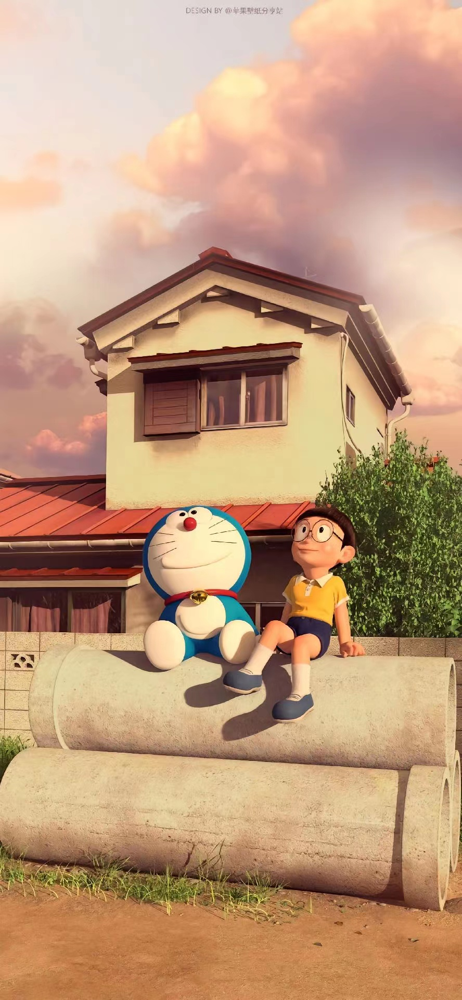
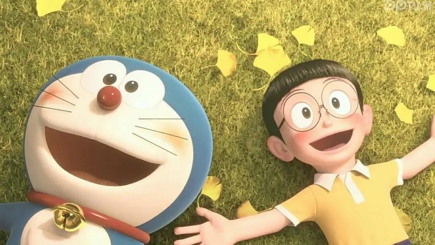
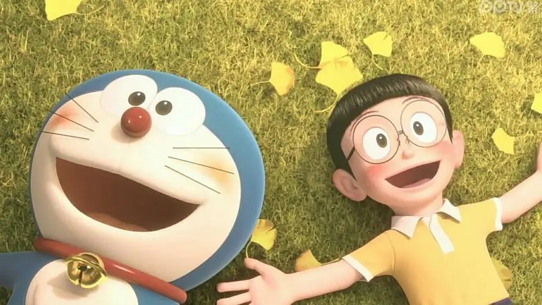

《哆啦A梦》
是日本漫画家藤本弘（笔名藤本Yoshimoto）所创作的漫画作品，于1969年至1996年在《小学馆周刊》上连载，共发行了45卷单行本
第一卷单行本于1970年发行，至今已经成为日本漫画史上销量最高的作品之一。该作品也在全球范围内广受欢迎，被翻译成多种语言出版。
故事中，哆啦A梦是一只来自22世纪的机器猫，被派往20世纪帮助野比世修解决生活中的各种问题。哆啦A梦可以使用各种未来科技，例如时光机、道具口袋等，帮助野比世修度过各种难关。同时，哆啦A梦也会因为各种原因而失去功能，需要野比世修帮助修理。

创作背景
藤本弘创作《哆啦A梦》的灵感来源于他自己的童年经历。他小时候曾经患过病，因此经常在家里休息，同时也很喜欢看科幻小说和漫画。他想象中的未来世界里，有一只机器猫可以帮助孩子们解决各种问题，于是就有了创作《哆啦A梦》的想法。
藤本弘的创作灵感还来自于他对现代社会的反思。他认为现代社会过于功利和浮躁，人们需要回归到朴素、真实的生活中去。因此，《哆啦A梦》中的故事情节往往围绕着家庭、友情、爱情等主题展开，旨在传达正能量和积极的价值观。
此外，藤本弘还受到了美国动画片《石器时代》的影响，他希望自己的作品也能够像《石器时代》一样，在幽默诙谐的同时，传递深刻的社会寓意。
藤本弘的创作灵感还来自于他对现代社会的反思。他认为现代社会过于功利和浮躁，人们需要回归到朴素、真实的生活中去。因此，《哆啦A梦》中的故事情节往往围绕着家庭、友情、爱情等主题展开，旨在传达正能量和积极的价值观。
此外，藤本弘还受到了美国动画片《石器时代》的影响，他希望自己的作品也能够像《石器时代》一样，在幽默诙谐的同时，传递深刻的社会寓意。
剧情简介
《哆啦A梦》的故事情节非常丰富，其中一些经典的剧情包括：
1.哆啦A梦与野比世修相识：在第一话中，哆啦A梦从22世纪的未来来到了20世纪的现代社会，遇到了他的主人野比世修。哆啦A梦通过各种道具和科技帮助野比世修解决了许多问题，两人由此成为了好朋友。
2.哆啦A梦与机器猫党：在一些剧情中，哆啦A梦与其他机器猫一起出现，他们通常都是来自未来，并且拥有各种神奇的功能和能力。这些机器猫通常都是哆啦A梦的朋友，一起经历各种有趣的冒险。
3.哆啦A梦与怪盗基德：在《哆啦A梦》和《名侦探柯南》的合作剧场版中，哆啦A梦和柯南的故事相互交织，他们一起追捕怪盗基德。这个剧情中有许多悬疑和推理的元素，非常精彩。
4.哆啦A梦与未来世界：在一些剧情中，哆啦A梦和野比世修一起回到未来世界，探索22世纪的科技和生活方式。这些剧情中通常会展示出未来世界的美好和先进。
总之，《哆啦A梦》是一部充满想象力和创意的作品，它讲述了一个机器猫和他的主人一起经历各种有趣冒险的故事。

1.哆啦A梦与野比世修相识：在第一话中，哆啦A梦从22世纪的未来来到了20世纪的现代社会，遇到了他的主人野比世修。哆啦A梦通过各种道具和科技帮助野比世修解决了许多问题，两人由此成为了好朋友。
2.哆啦A梦与机器猫党：在一些剧情中，哆啦A梦与其他机器猫一起出现，他们通常都是来自未来，并且拥有各种神奇的功能和能力。这些机器猫通常都是哆啦A梦的朋友，一起经历各种有趣的冒险。
3.哆啦A梦与怪盗基德：在《哆啦A梦》和《名侦探柯南》的合作剧场版中，哆啦A梦和柯南的故事相互交织，他们一起追捕怪盗基德。这个剧情中有许多悬疑和推理的元素，非常精彩。
4.哆啦A梦与未来世界：在一些剧情中，哆啦A梦和野比世修一起回到未来世界，探索22世纪的科技和生活方式。这些剧情中通常会展示出未来世界的美好和先进。
总之，《哆啦A梦》是一部充满想象力和创意的作品，它讲述了一个机器猫和他的主人一起经历各种有趣冒险的故事。
